User guide for partners: how the system works, screen by screen
Version 1.0 · October 2026 · Covers CRM phases 0–5 (live at auvetric.com/crm) and the client portal (auvetric.com/portal)
The screenshots use made-up demo clients and figures. Your own screens show your real data.
Every step leaves a trace on the client's timeline: who did what, and when. Financial changes also go into the audit log. Nothing has to be typed twice. A lead becomes a client with one click, a quote becomes an invoice, logged hours become invoice lines, and re-billable expenses are added to the next invoice.
1. Getting started
Signing in
Go to auvetric.com/crm. Sign-in has two steps:
Your email and password. The first time, you use the one-time password you were given, and the CRM asks you to choose your own (at least 12 characters).
A 6-digit code from your authenticator app (Google Authenticator, Microsoft Authenticator, Authy, 1Password…). On first sign-in you scan a QR code to link the app. Two-factor sign-in is mandatory for everyone.
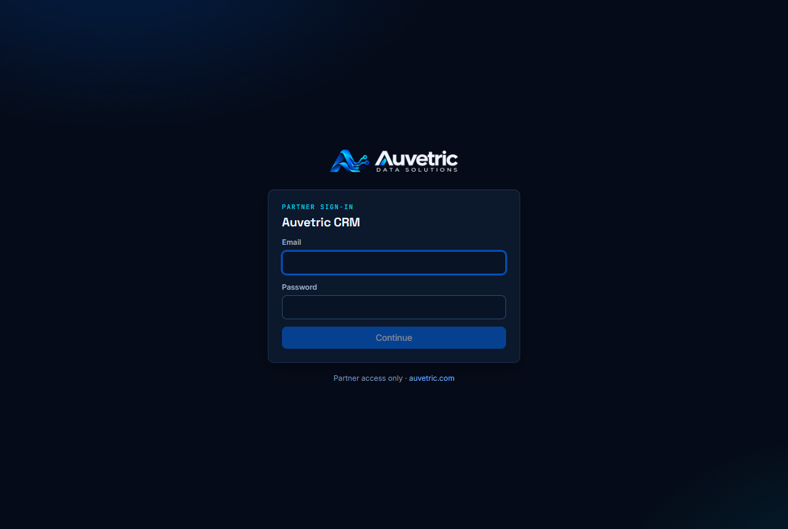
The sign-in page. After the password step, the CRM asks for the code from your authenticator app.
Security limitsFive wrong passwords lock the account for 15 minutes. Five wrong codes cancel the sign-in attempt. A session ends after 12 hours of inactivity and after 7 days at most. Each code works only once.
The screen layout
Sidebar (left): every module, in groups: Overview, Sales, Delivery, Finance, Insights, Admin. Your name and Sign out are at the bottom.
Top bar: the page name, a link to the public website, and the sun/moon button, which switches between the dark and the light theme. Each person's choice is remembered.
Lists: click any row to open it. Rows also work with the keyboard: Tab to a row, then Enter.
Detail panels open over the list. Close them with ✕ or the Escape key.
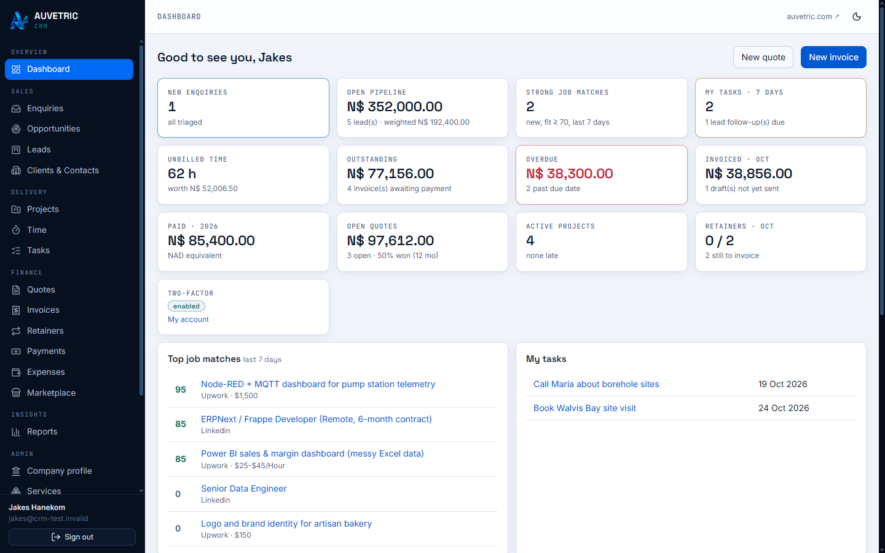
The same dashboard in the light theme. Printed documents are always white A4, whichever theme you use.
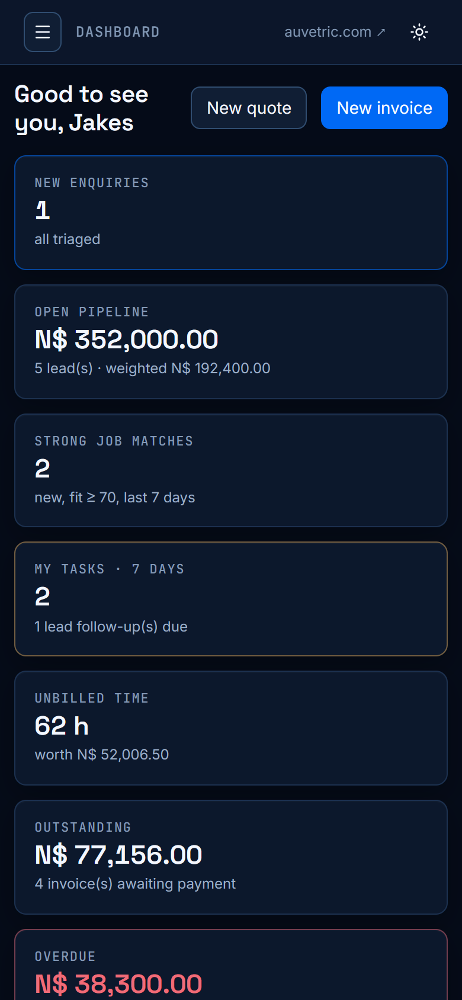
On a phone the sidebar folds into the ☰ menu, so the CRM works on site visits.
Roles
Role
Can do
Admin
Everything, including Company profile, Users, Settings (email, backups, board columns, daily job), Integrations and the Audit log.
Member
All day-to-day work: sales, clients, projects, time, quotes, invoices, payments, expenses, reports. No admin screens.
Read-only
Can look at everything a member sees but can't change anything. Useful for an accountant or auditor.
Jakes and Alex are both admins.
My account
Admin → My account is where you change your password, see your signed-in devices and Sign out everywhere (for example, if a laptop goes missing).
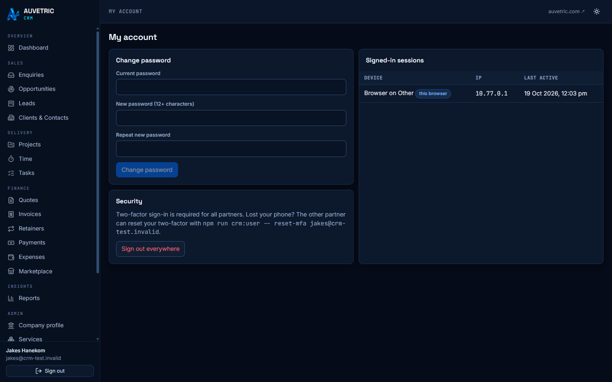
My account: password, active sessions and two-factor status.
2. Dashboard
The first screen after sign-in. It answers "what needs my attention today?" without opening any other module. All money figures are converted to N$; USD amounts use each document's own exchange rate.
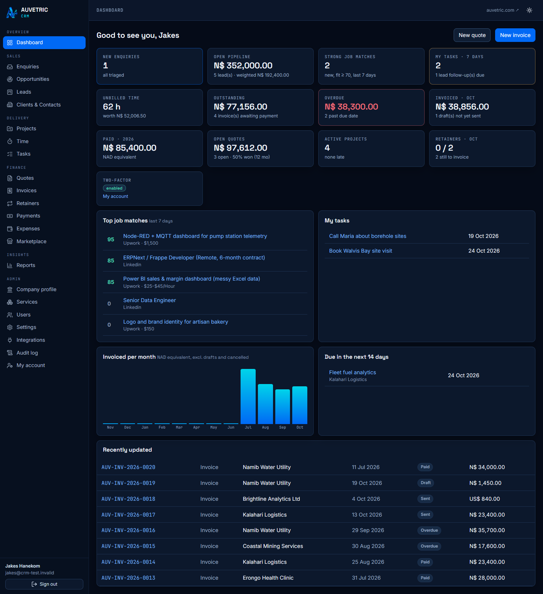
Dashboard: twelve key figures, then job matches, your tasks, invoicing per month, deadlines and recently changed documents.
Tile
What it means
New enquiries
Website enquiries still in the inbox, and whether the AI has triaged them.
Open pipeline
Total value of open leads, plus the weighted value (value × probability).
Strong job matches
Upwork/LinkedIn listings from the last 7 days with a fit score of 70 or more.
My tasks · 7 days
Your tasks due in the next week, including lead follow-ups.
Unbilled time
Billable hours not yet on an invoice, and what they are worth.
Outstanding / Overdue
Money owed on sent invoices; the red tile is the part past its due date.
Invoiced (month) / Paid (year)
Invoiced this month, and payments received this year.
Open quotes
Value of quotes waiting for an answer, and the 12-month win rate.
Active projects / Retainers
Projects in progress (and how many are late); retainers invoiced this month.
The New quote and New invoice buttons at the top right are shortcuts.
3. Enquiries
Every contact form sent from auvetric.com lands here automatically. Within a minute or two, the n8n automation on Jakes's PC asks Claude (AI) to triage it, and both partners get an email.
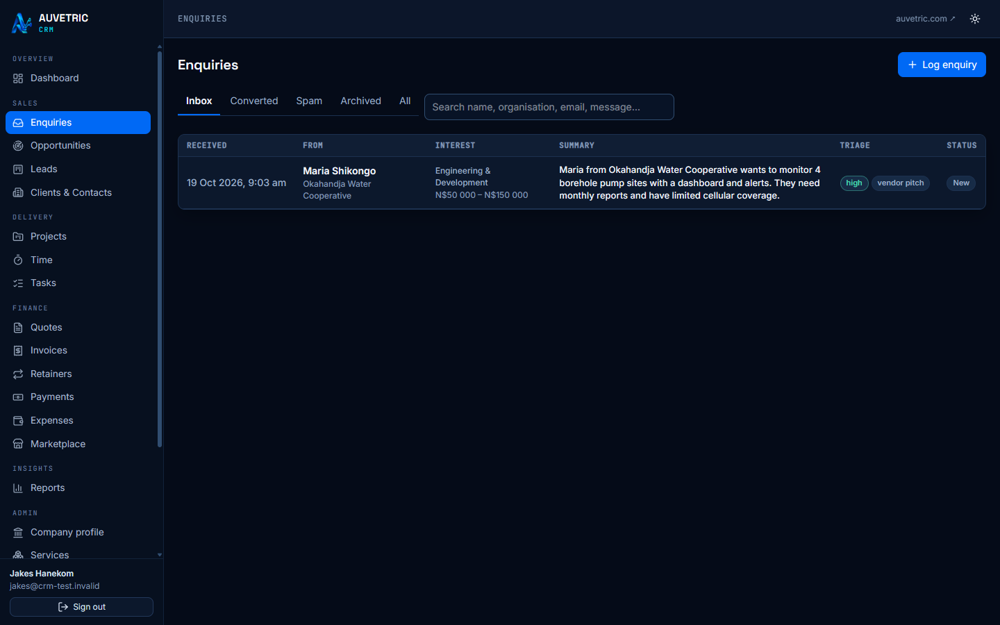
The enquiry inbox. The tabs filter by status: Inbox, Converted, Spam, Archived and All.
The enquiry panel
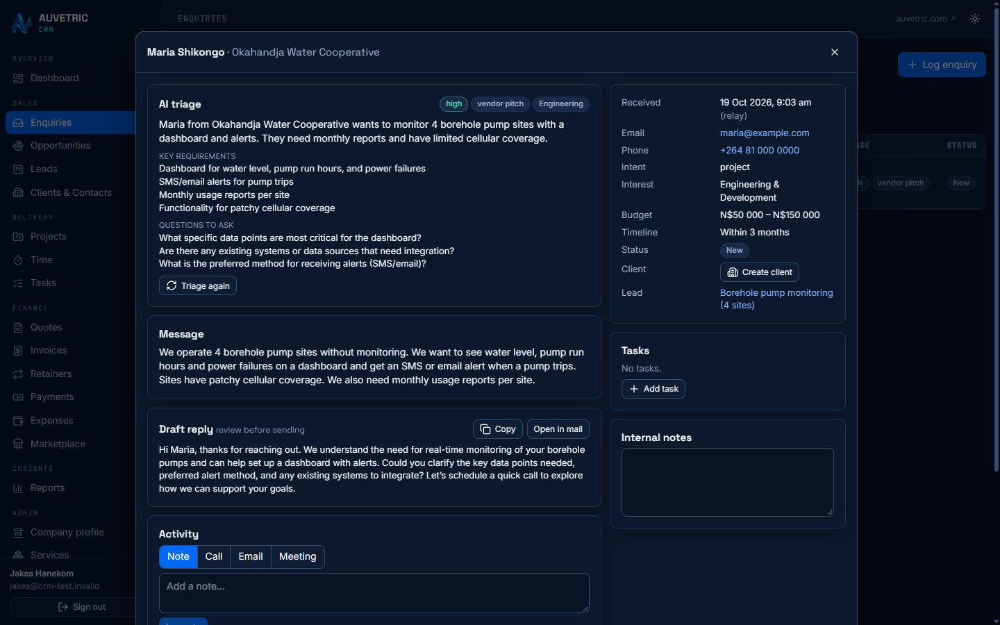
An enquiry opened: AI triage on the left, contact details, linked lead, tasks and internal notes on the right.
AI triage: a summary, the priority, the category and the matching practice, the key requirements and suggested questions to ask. Triage again re-runs it.
Draft reply: an AI-written first reply. Always read and adjust it before sending. Copy copies it; Open in mail starts an email to the sender with the text filled in.
Activity: log calls, emails, meetings and notes.
Actions: Convert to lead (puts it on the pipeline), Create client, Mark reviewed, Spam, Archive.
Log enquiry (top right) adds an enquiry that came in by phone or in person.
Deleting vs archivingArchive anything you're done with. Use Delete only when someone asks for their data to be erased (privacy request).
4. Opportunities
Job listings from Upwork and LinkedIn alerts. n8n reads the alert emails, extracts each listing and scores how well it fits Auvetric (0–100). The score comes with reasons and red flags.
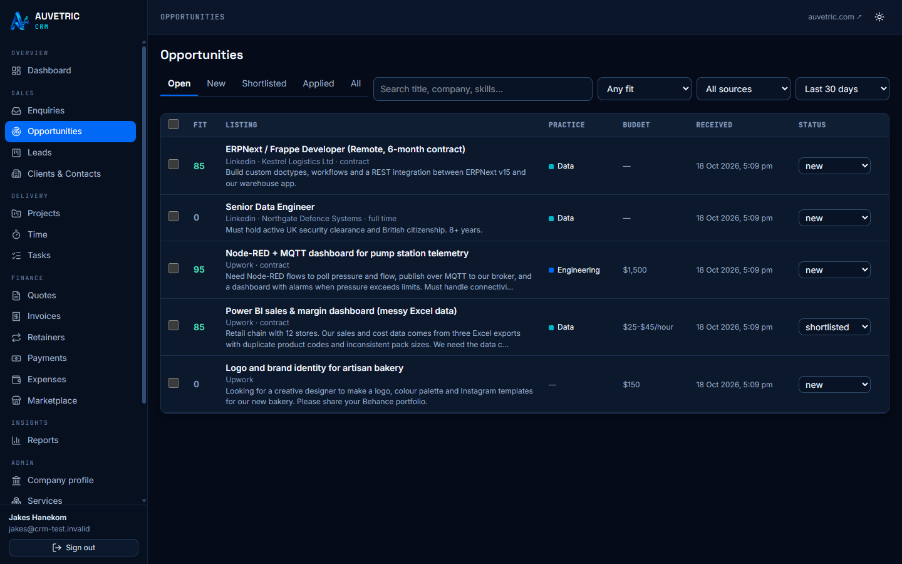
Opportunities: fit score, source, practice and budget. Tabs filter by status (Open, New, Shortlisted, Applied, All).
Work each listing through its statuses: New → Shortlisted → Applied → Interviewing → Won / Lost, or Skipped. In the panel:
Open listing opens the original job post.
Shortlist / Skip are quick decisions.
Add to pipeline creates a lead linked to the listing. When that lead is won or lost, the listing follows automatically.
5. Leads (the sales pipeline)
A board with one column per stage: New → Qualified → Discovery → Proposal sent → Negotiation → Won / Lost. Drag a card to move it. The header shows the total and the weighted value of the open pipeline.
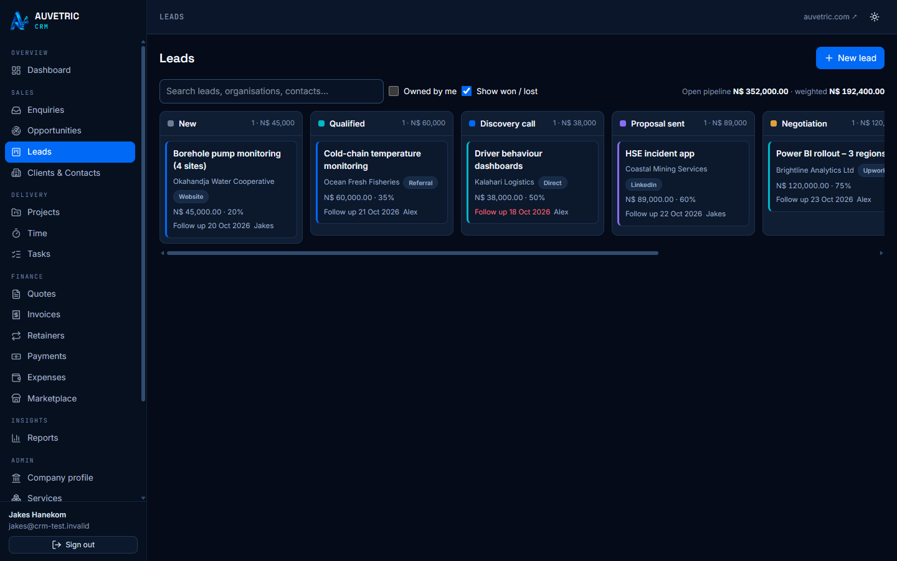
The pipeline board. Each card shows organisation, value, probability, source, next follow-up and owner.
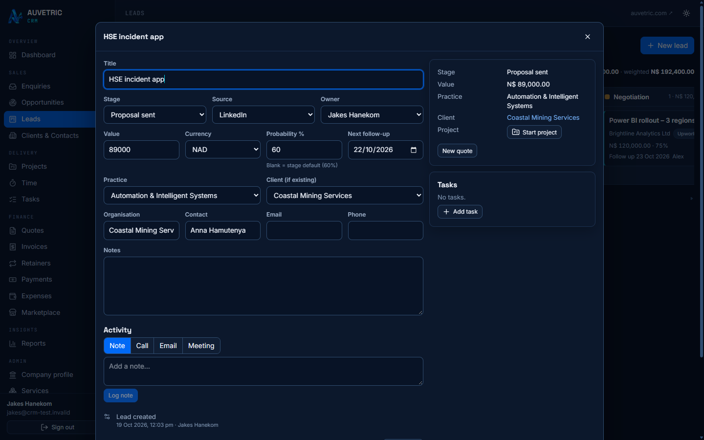
A lead opened: deal details on the left; links, tasks and quick actions on the right.
Probability: leave it blank to use the stage default (for example, Proposal = 60%).
Next follow-up: shows on the owner's dashboard when it's due.
Source (website, Upwork, LinkedIn, referral, direct…) feeds the win-rate-by-source report.
Create client turns the organisation into a client record.
New quote starts a quote for that client.
Start project creates the project when the lead is won.
When moving a lead to Lost, record the reason. The reasons are reviewed in Reports.
6. Clients & contacts
One record per organisation, with its people (contacts), documents, projects, files and full history.
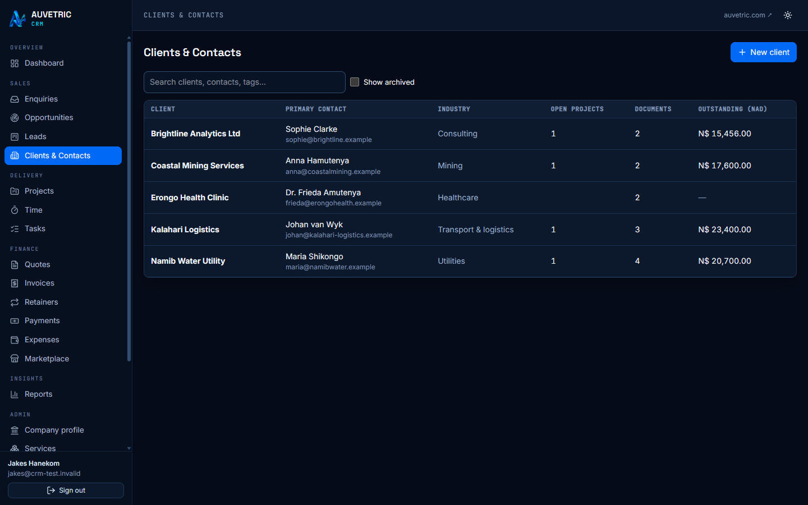
The client list with industry, primary contact, open projects and outstanding balance. Search to find a client quickly.
The client page
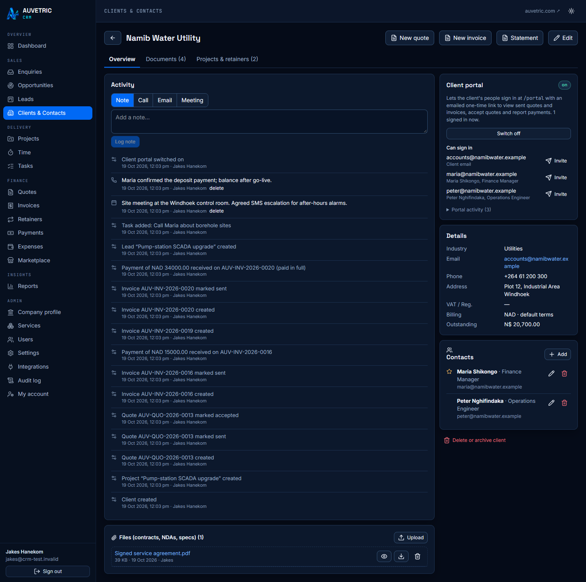
A client page: activity timeline and files on the left; portal access, details and contacts on the right.
Tabs: Overview (timeline), Documents (all quotes and invoices) and Projects & retainers.
Activity: choose Note, Call, Email or Meeting, type and press Log note. System events (invoice sent, payment received, portal activity) are added automatically.
Files: contracts, NDAs and specifications. Drag files in or use Upload. The limit is 4 MB per file; PDFs, images and Office documents are allowed.
Contacts: Add people. The ★ marks the primary contact used on documents.
Buttons at the top: New quote, New invoice, Statement, Edit.
Billing: currency (NAD or USD) and payment terms. Leave the terms empty to use the company default (14 days).
Archive rather than deleteA client with documents can't be deleted, because that would break the invoice history. Delete or archive client archives it instead: it disappears from lists and pickers but keeps its history.
7. Projects
A board of delivery work. The default columns are Planned → In progress → Waiting on client → Review / UAT → Done; admins can rename, recolour or add columns in Settings. Drag cards between columns.
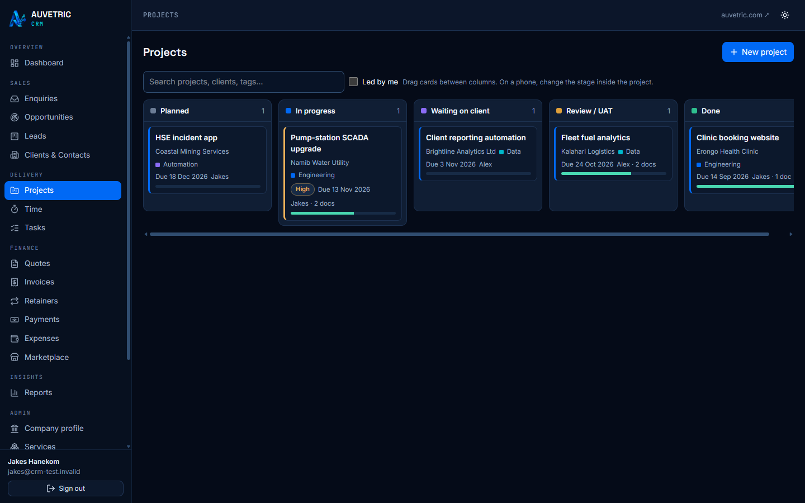
The project board. Each card shows the client, priority, checklist progress, hours logged against the budget and the due date.
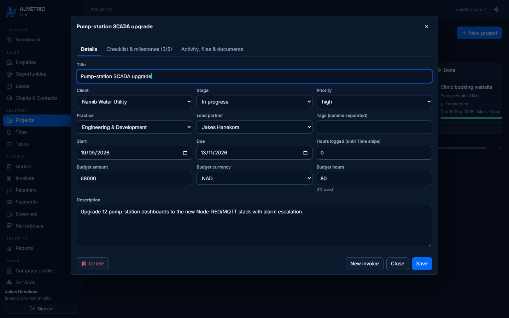
A project opened: details, budget (amount and hours), lead partner, dates, description, checklist and milestones.
Budget: an amount and/or hours. Logged time is compared with the budget hours, so overruns show early.
Checklist for the work items; milestones with due dates (tick them off as they're reached).
Activity, files & documents tab: notes, uploads, and every quote and invoice linked to the project.
New invoice starts an invoice already linked to the project.
Projects due in the next 14 days appear on the dashboard.
8. Time
Log hours per project. Billable hours carry an hourly rate and later become invoice lines, so no time is forgotten when billing.
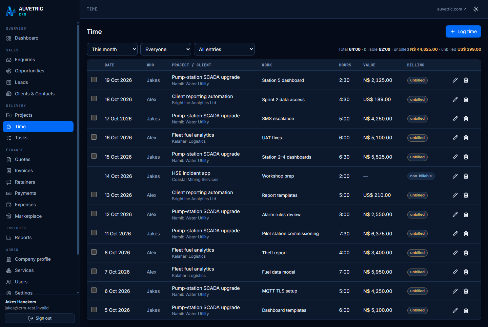
Time entries filtered to This month · Everyone. The totals at the top right show hours, billable hours and the unbilled value.
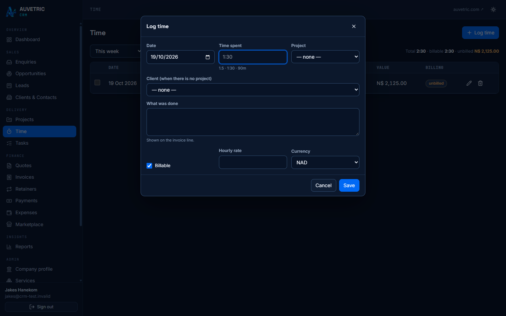
Logging time. The duration accepts 1.5, 1,5, 1:30, 90m or 2h.
Turning time into an invoice
Set the filter to Billable, not invoiced (and the period, e.g. All time).
Tick the entries to bill (the checkbox at the start of each row).
Press Invoice selected. Choose a new draft invoice or an existing draft, and whether you want one line per time entry or one summarised line per project and rate.
Invoiced entries show invoiced and become read-only. If you remove the line from the draft, or delete the draft, the hours become unbilled again.
Admins can log for othersAn admin can choose the person on an entry, for example when entering Alex's hours from his notes. The hours per week set in Users drive the utilisation report.
9. Tasks
Follow-ups and reminders for either partner. A task can stand alone or be linked to a client, project, lead, enquiry or opportunity, where it also shows in that record's panel.
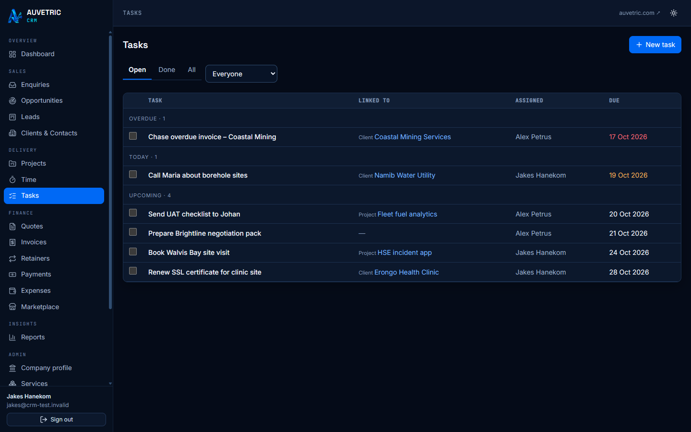
Tasks for everyone. Overdue tasks are red; tick the box to complete one.
Tabs: Open, Overdue, Today, Upcoming, No due date, Done, All. The person filter switches between your tasks, everyone's and a specific partner's.
Your open tasks for the next 7 days are on your dashboard.
10. Quotes
Quotations, with optional proposal sections, printed on the Auvetric letterhead. Numbers are automatic (AUV-QUO-2026-0001…).
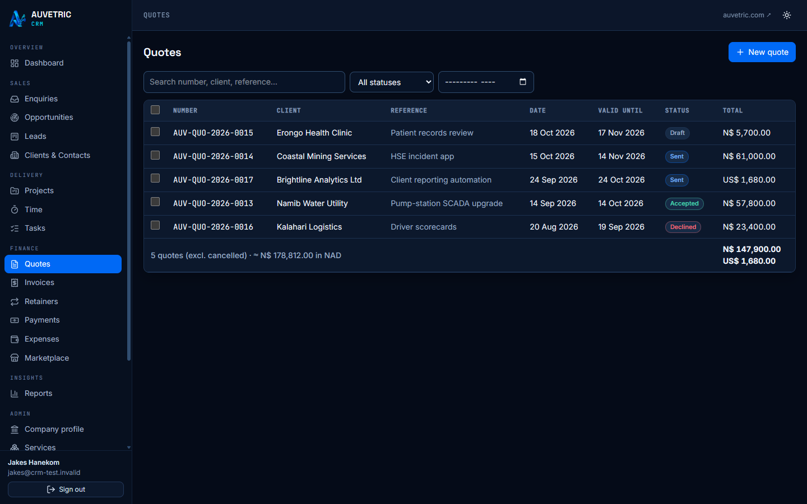
The quote list. Filter by status or search; tick several to print or update them together.
Creating a quote
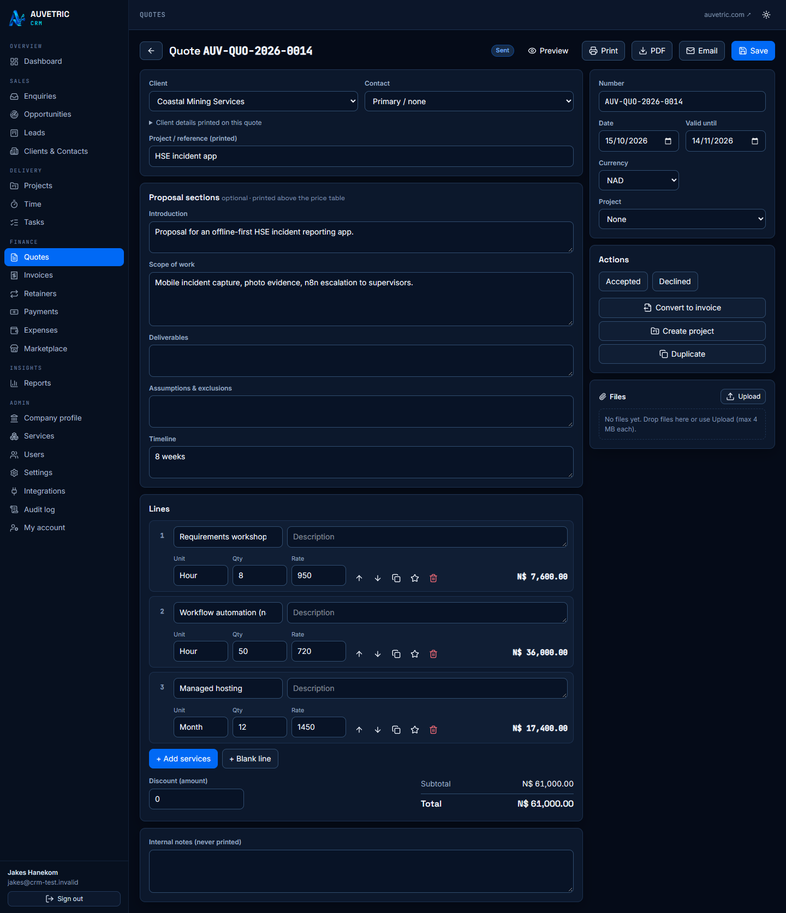
The quote editor: client and reference, proposal sections, lines and totals; number, dates, currency and actions on the right.
New quote (from Quotes, the dashboard, a client or a lead). Choose the client and contact.
Add lines with + Add services (picks from the service catalogue with its rates) or + Blank line. Each line has an item, description, unit, quantity and rate. Use the arrows to reorder, the copy icon to duplicate a line, and ★ to save it to the catalogue.
Optional proposal sections: introduction, scope, deliverables, assumptions and timeline. They print as a proposal before the price table.
The valid until date defaults to 30 days. Internal notes are never printed or shown to the client.
Save, check with Preview, then send it (Email or PDF) and press Mark sent.
After sending
Accepted / Declined record the client's answer. If the client accepts in the portal, this happens automatically.
Convert to invoice copies the lines into a new invoice. The quote becomes invoiced.
Duplicate makes a revised copy. Reopen returns a quote to draft.
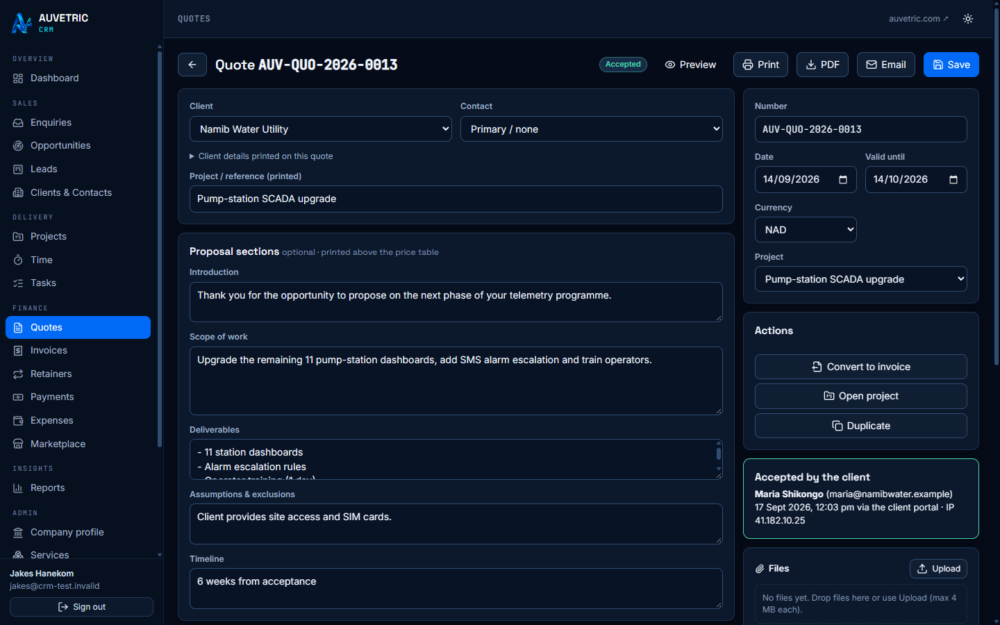
A quote accepted in the client portal: the green panel records who accepted it, when, and from which IP address. The quote is then locked.
11. Invoices
NAD or USD invoices with automatic numbering (AUV-INV-2026-0001…). Statuses: Draft → Sent → Paid. A sent invoice past its due date becomes Overdue automatically (the daily job). Invoices can also be Cancelled.
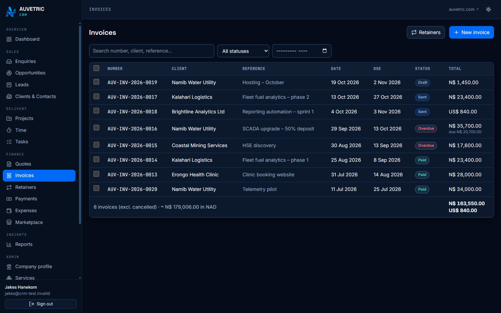
The invoice list: totals, balance and status per invoice. Tick invoices to print, mark sent or mark paid together.
The invoice editor
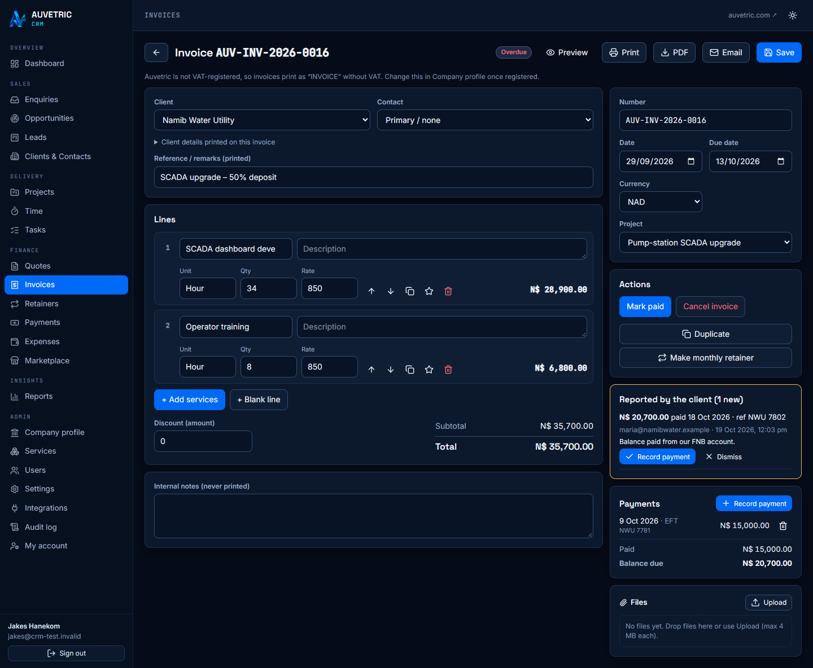
An invoice with a part payment and a payment the client reported in the portal (yellow panel).
Top bar: status badge, Preview, Print, PDF, Email, Save.
Client details printed on this invoice (fold-out): a snapshot of the name and address at the time of invoicing, which you can adjust for this invoice only.
Currency: for USD, enter the exchange rate to NAD. Reports and the dashboard use it.
Project: links the invoice to a project, for project and practice reporting.
Actions: Mark sent, Mark paid (records a payment for the full balance), Undo paid, Cancel invoice, Duplicate, Make monthly retainer.
Payments panel: every payment, the amount paid and the balance due.
+ Add services picks lines from the service catalogue, grouped by practice, with their standard rates.
Printing and PDF
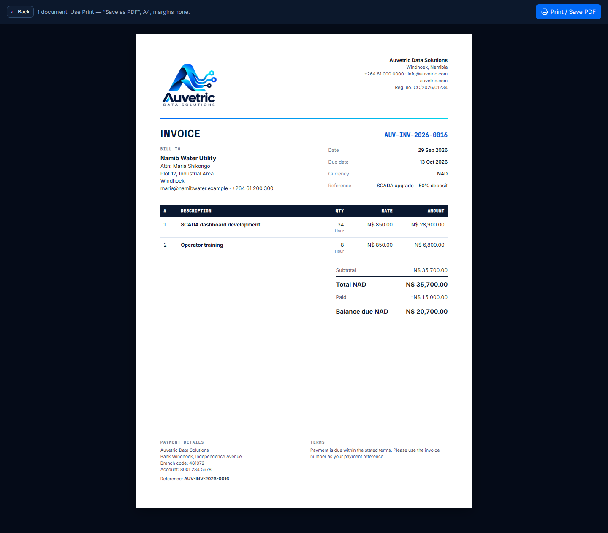
The A4 invoice. Banking details and the payment reference print at the bottom.
PDF downloads a ready-made PDF. Print opens the A4 page for the browser's Print / Save as PDF. On the lists, tick several documents to print them in one go.
No VAT yetWhile Auvetric isn't VAT-registered, documents print as "INVOICE" without VAT. Once registered, switch it on in Company profile; from then on, documents print as "TAX INVOICE" with 15% VAT.
Emailing
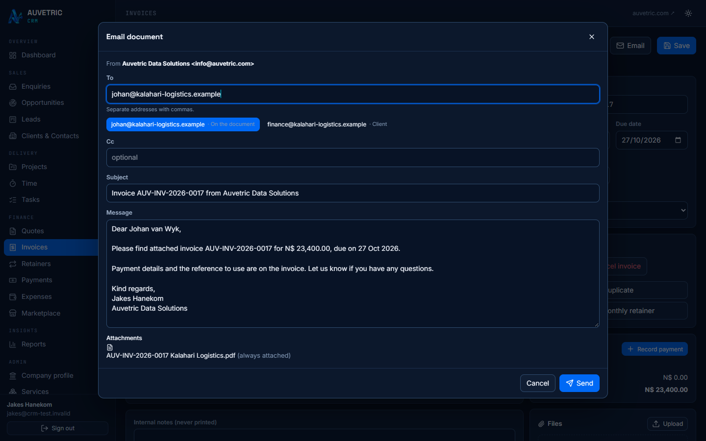
Emailing an invoice: recipients come from the client and its contacts. The message comes from the template in Settings and can be edited before sending. The PDF is attached automatically.
Emails go out through the info@auvetric.com Zoho mailbox, with a BCC copy to the mailbox so it appears in Zoho's Sent folder. Each send is noted on the client timeline. Settings → Email must be set up first.
Recording a payment
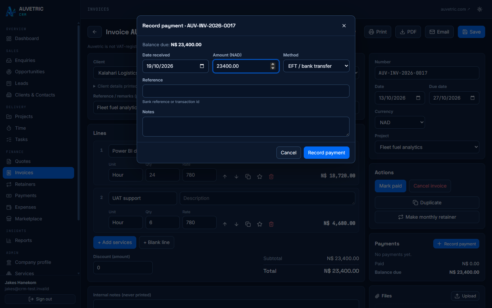
Record payment: date, amount (defaults to the balance), method and the bank reference. Part payments are fine.
When payments cover the total, the invoice becomes Paid automatically. Removing a payment reopens it.
12. Retainers
Monthly recurring work: support, hosting, SLA and BI retainers. Each retainer is a template of invoice lines for one client.
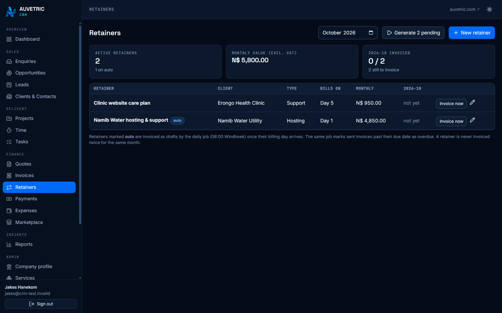
Retainers: type, monthly value, day of month, auto on/off, and whether this month's invoice exists.
Auto on: the daily job (06:00) creates a draft invoice on the chosen day each month. You review it and send it.
Auto off: press Invoice now when you're ready.
A retainer never invoices twice in the same month, so pressing the button again is safe.
A retainer can be created from an existing invoice with Make monthly retainer.
Deleting a retainer that already has invoices pauses it instead.
13. Payments, debtors & statements
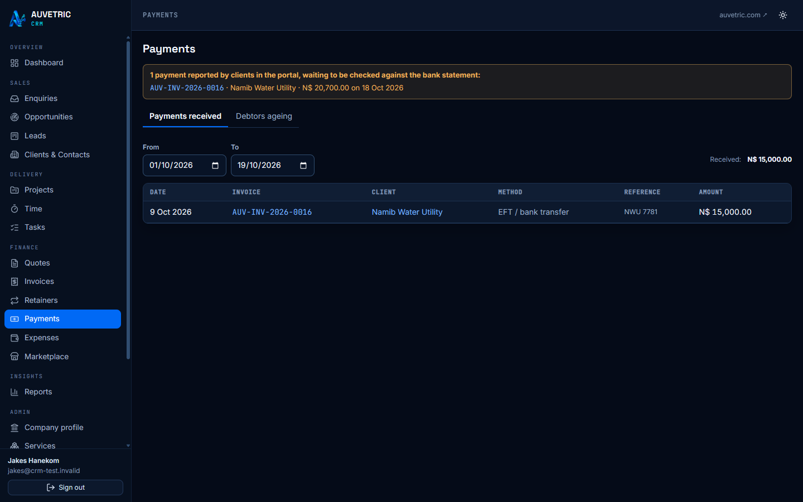
Payments: the yellow banner lists payments clients reported in the portal that are waiting to be checked. Below are debtors ageing and all payments received.
Portal notices (yellow): payments clients said they've made. Check each against the bank statement, then open the invoice and use Record payment or Dismiss.
Debtors ageing: what each client owes, split by how late it is (1–30, 31–60, 61–90 and 90+ days). Use it for collection calls.
Payments received: every payment, with filters by period and client.
Client statements
From the client page or the debtors list, press Statement. Choose the period, then print it, download the PDF or email it to the client.
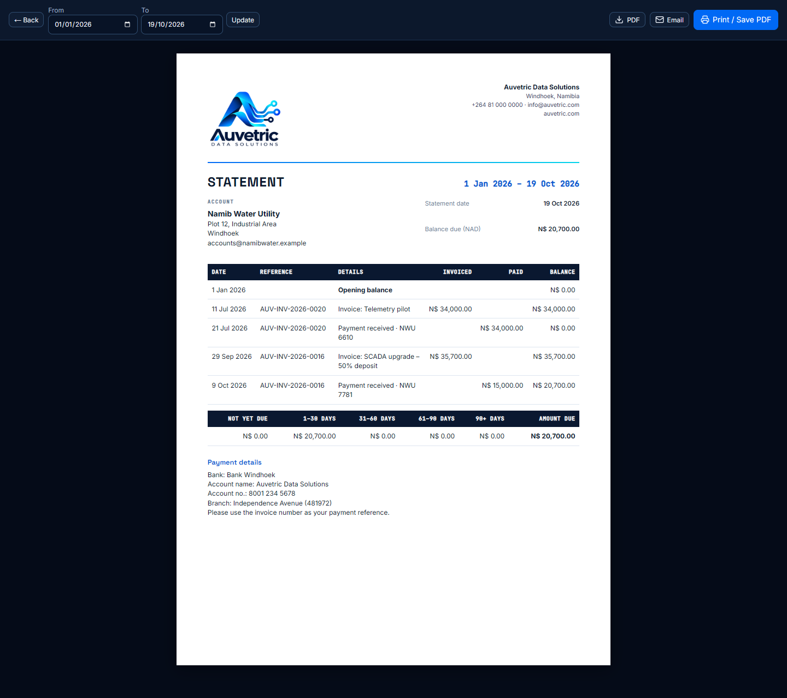
A client statement: opening balance, invoices and payments with a running balance, and the amount due.
14. Expenses
Business costs: hosting, software, hardware, travel, subcontractors, fees and office costs. Together with income they make up the cash-flow report.
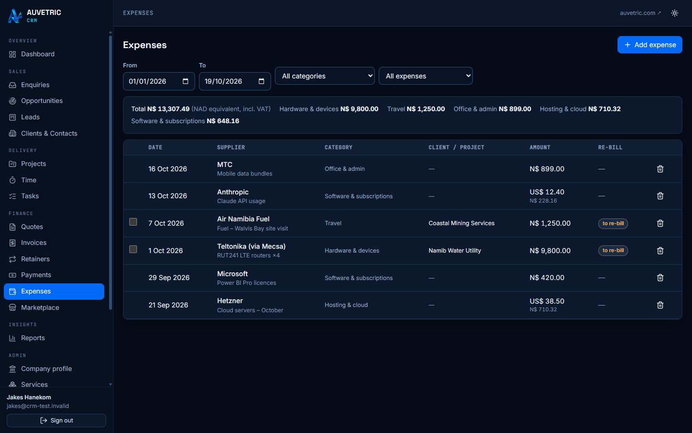
Expenses with category, supplier, the NAD amount, and whether each one is to be re-billed to a client.
Enter the amount as paid, including VAT, and the VAT part separately if any.
USD costs (cloud services, AI tools) need the exchange rate on the day.
Attach the receipt to the expense.
Re-billable: tick it, choose the client and an optional markup %. Then use Re-bill to client to add the expenses to a draft invoice, the same way time is invoiced.
15. Marketplace earnings
Income earned through Upwork, Fiverr or Freelancer isn't invoiced from the CRM. Record each payout here so reports show all revenue.
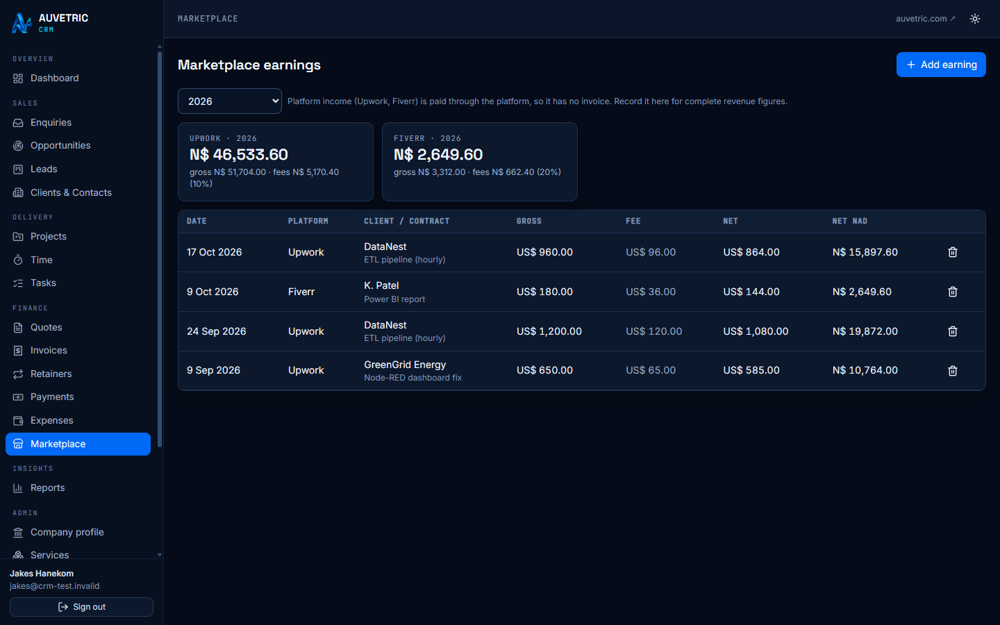
Marketplace earnings: gross, platform fee and net, converted to N$.
Enter the gross amount, the platform fee and the exchange rate (usually USD). Optionally link it to a client and project.
16. Reports
Business figures for any period: This month, Last month, This year, Last year, Last 12 months, or your own dates. Every table can be downloaded as CSV for Excel.
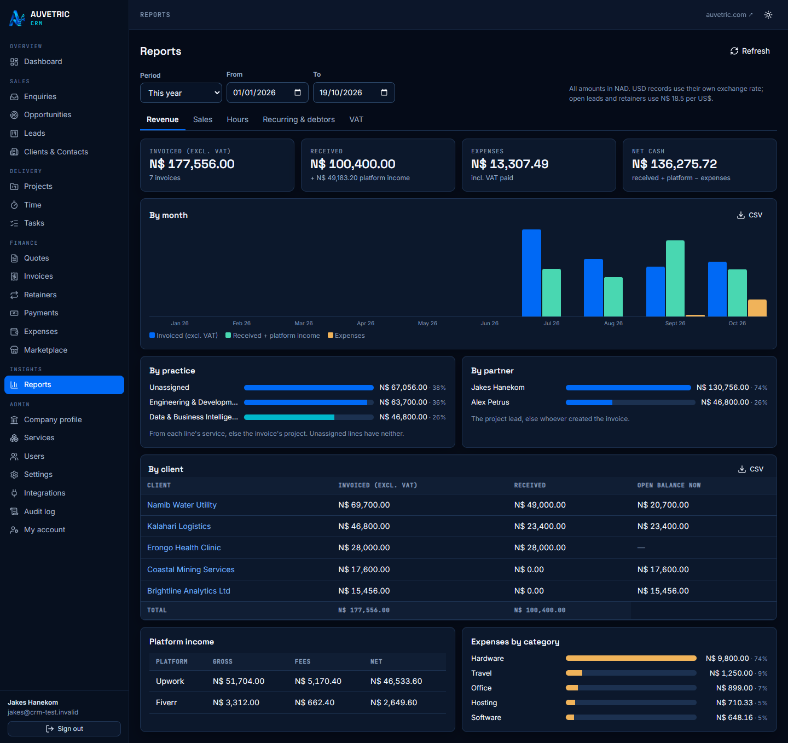
Reports: headline figures, a monthly chart (invoiced, received, expenses) and breakdowns.
Tab
Contents
Revenue
Invoiced by month, practice, client, project and partner; platform income; expenses by category; cash flow.
Sales
Pipeline by stage, win rate by source, opportunities by source.
Hours
Utilisation per partner: billable hours compared with available hours.
Recurring & debtors
Monthly recurring income by retainer type; debtors ageing.
VAT
Working figures for when Auvetric is VAT-registered.
How revenue is countedRevenue is sent, paid and overdue invoices, excluding VAT, dated by invoice date and converted to N$ at each invoice's own rate. Drafts and cancelled invoices are left out. Cash flow is payments received plus marketplace net income, minus expenses.
17. The client portal
At auvetric.com/portal, a client's people can sign in to see their documents, accept quotes and tell you about payments, without emailing back and forth. The portal is off for every client until you switch it on.
Giving a client access (CRM side)
Open the client. In the Client portal card, press Switch on.
The card lists every address that can sign in: the client email and each contact's email.
Press Invite next to a person. They get an email explaining the portal, with a link to it.
Switching the portal off, or removing an email address from the client or contact, ends that person's access immediately. Portal activity on the card shows sign-ins, views, acceptances and payment notices.
Before inviting anyone1) Settings → Email must be working, because sign-in links are emailed. 2) Enter the real banking details in Company profile. Until they're filled in, the portal tells clients to contact you for banking details.
What the client sees
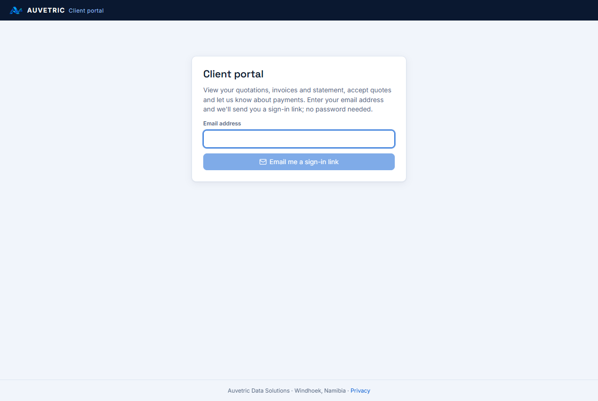
Step 1: the client enters their email address. There are no passwords to remember.
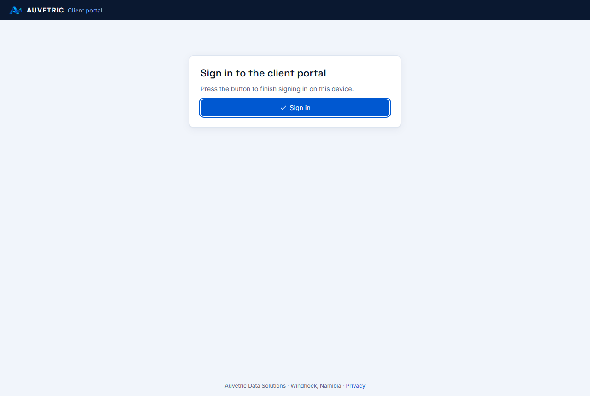
Step 2: they click the link in the email (valid 15 minutes, works once), then press Sign in.
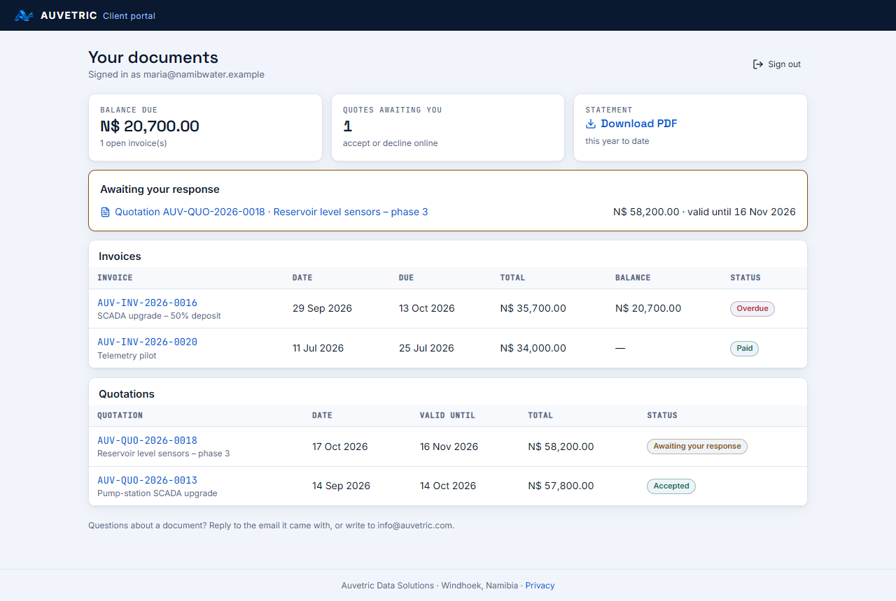
The client's home page: balance due, quotes awaiting a response, their invoices and quotations, and a statement download.
Clients only see sent documents for their own organisation. Drafts, cancelled invoices and internal notes never appear. The first time a client opens a document, it's noted on your timeline.
Accepting a quote
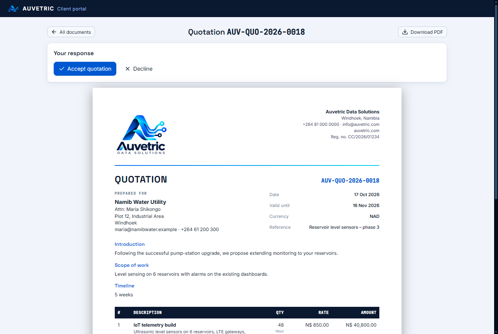
A quote in the portal, with Accept quotation and Decline buttons above the document.
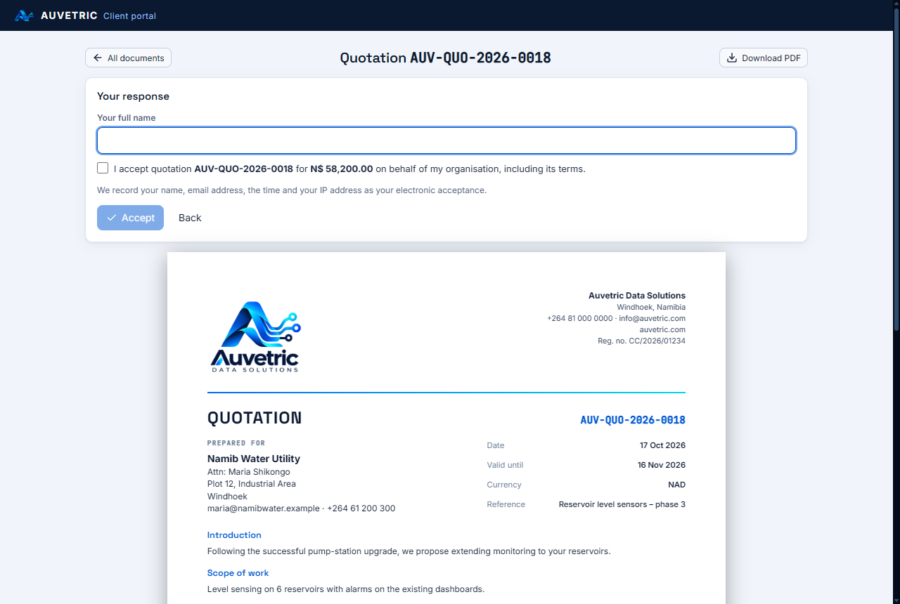
To accept, the client types their full name and ticks the confirmation box.
On acceptance, the quote is marked accepted and locked. The name, email, time and IP address are recorded and printed on the quote. Both partners get an email. If the client declines, they can give a reason, which lands on the timeline. Quotes past their valid-until date can't be accepted.
Reporting a payment
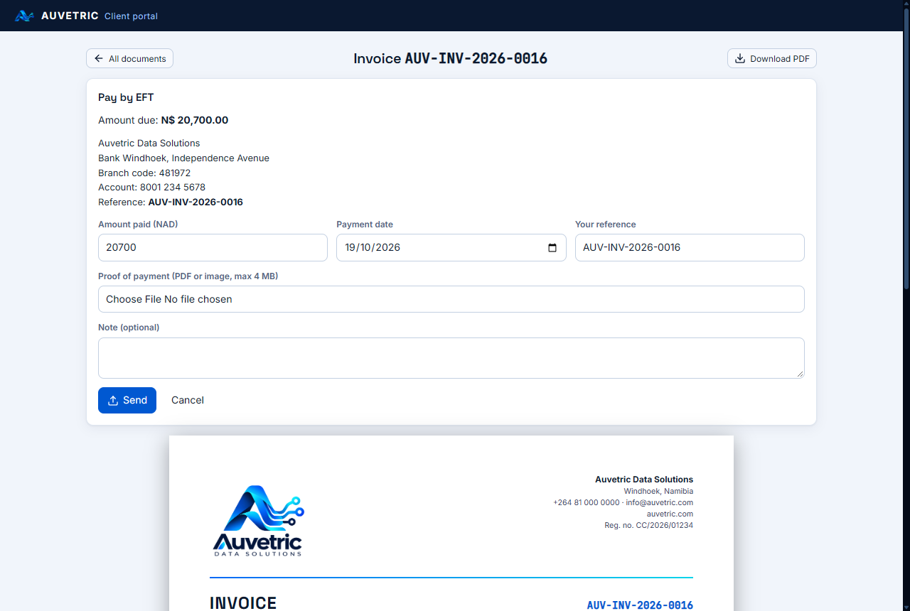
An invoice in the portal: EFT details with the invoice number as reference, and the "I've paid" form with an optional proof-of-payment upload.
When a client reports a payment, you get an email and the notice appears on the invoice and the Payments page. Nothing is marked paid automatically. Check the bank first, then press Record payment on the notice; it fills in the payment form for you. Card payments aren't available yet; they need a merchant account (DPO Pay, PayToday or PayPal Business).
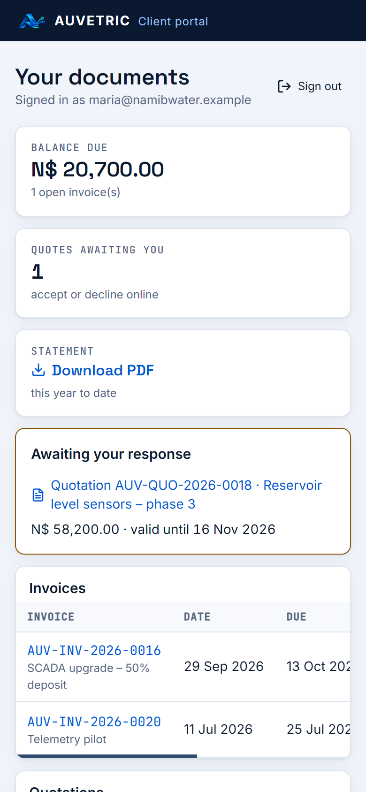
The portal on a phone.
18. Admin: company, services, users, settings
Company profile
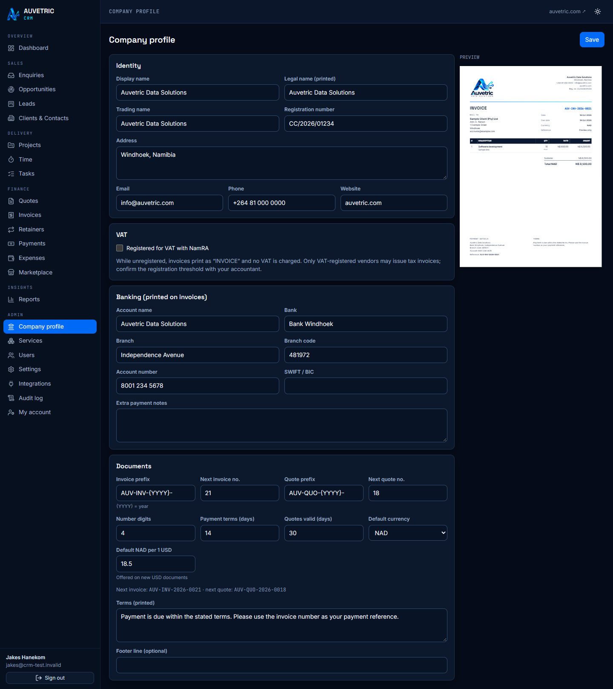
Company profile: identity, banking, VAT, document numbering and texts, with a live letterhead preview.
Banking: printed on invoices and shown in the portal.
VAT: VAT registration, VAT number and rate.
Documents: number prefixes and next numbers, payment terms, quote validity, USD→NAD default rate, terms and footer text.
"[to be confirmed]"Fields still showing this text are highlighted in yellow on printed documents and the portal. Fill them in before sending documents to clients.
Services
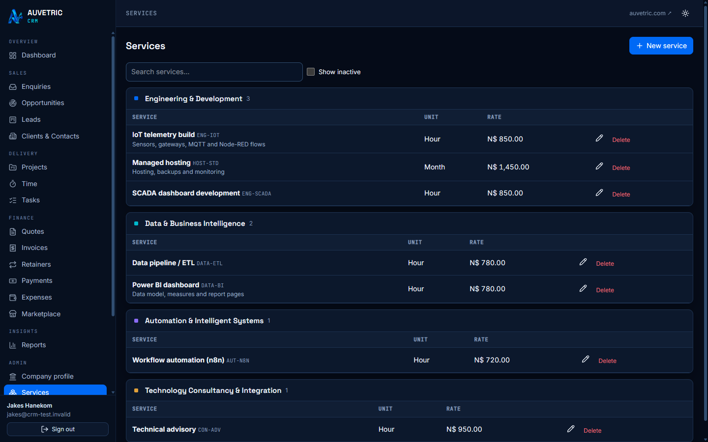
The service catalogue, grouped by the four practices, with units and standard rates.
Services fill in quote and invoice lines quickly, and tie revenue to a practice in Reports. Inactive services stay on old documents but can't be picked for new ones.
Users
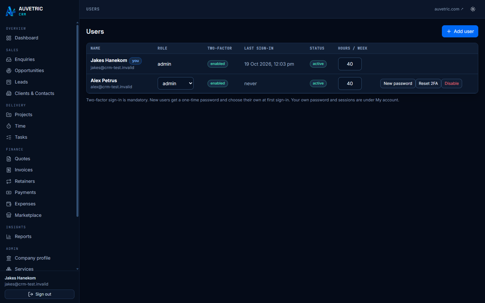
Users: role, two-factor status, last sign-in, status and working hours per week.
Add user shows a one-time password once. Hand it over by phone or in person, never by email.
New password issues a new one-time password and signs the person out everywhere.
Reset 2FA is for a lost or replaced phone: the person links their authenticator again at the next sign-in.
Unlock clears a lockout after too many wrong passwords. Disable blocks access but keeps the person's history.
Hours / week is used for the utilisation report.
Settings
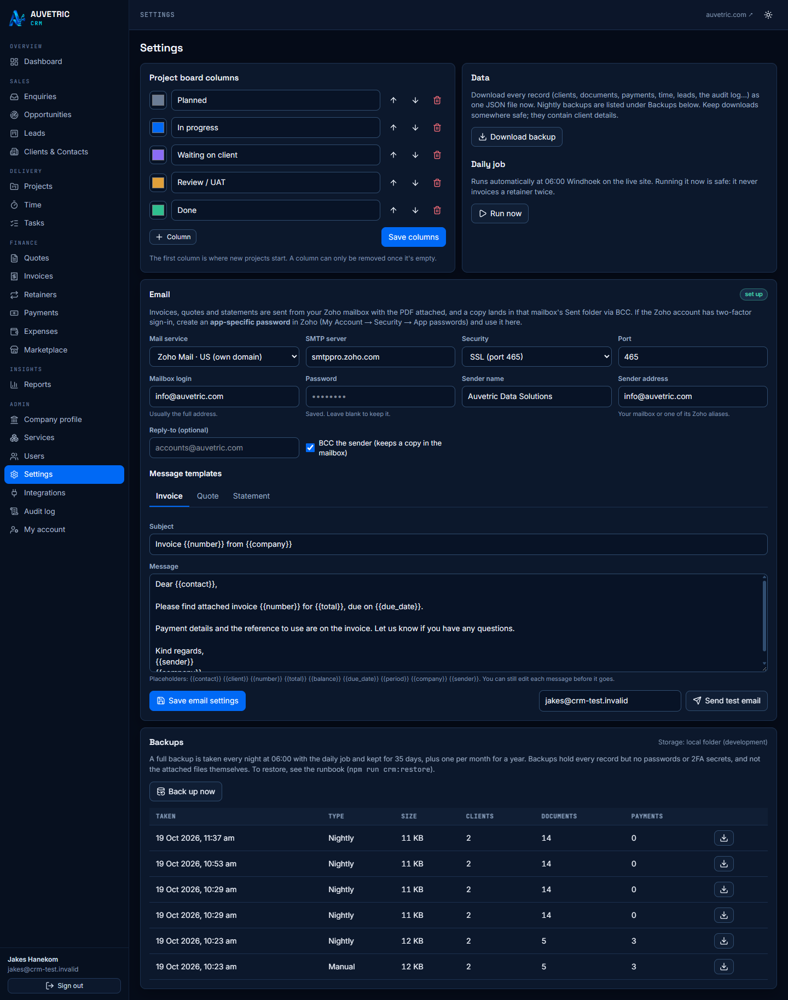
Settings: project board columns, data download, daily job, email (Zoho SMTP) with message templates, and backups.
Project board columns: rename, recolour, reorder and add columns. A column can only be removed once it's empty.
Data: Download backup saves every record as one JSON file. Keep it somewhere safe; it contains client details.
Daily job: runs at 06:00 Windhoek time. It creates due retainer invoices, marks overdue invoices and takes the nightly backup. Run now is safe to press at any time.
Email: Zoho Mail settings. Choose Zoho Mail · US (own domain), mailbox info@auvetric.com, and an app-specific password if the Zoho account uses two-factor sign-in. Press Send test email to check. The message templates per document type support placeholders such as {{number}}, {{total}} and {{due_date}}.
Backups: a full backup every night, kept 35 days, plus one per month for a year. Back up now and download buttons. Backups exclude passwords and 2FA secrets.
Integrations
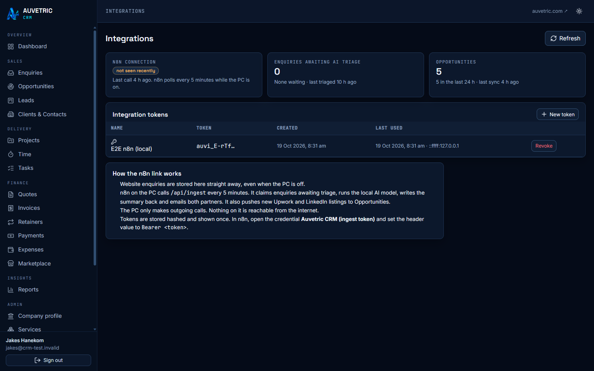
Integrations: the token n8n uses to deliver enquiries and job listings, and when it last connected.
If the automation stops delivering, check last used here. To replace the token, use New token, paste it into the n8n credential, then Revoke the old one. The token is shown only once.
Audit log
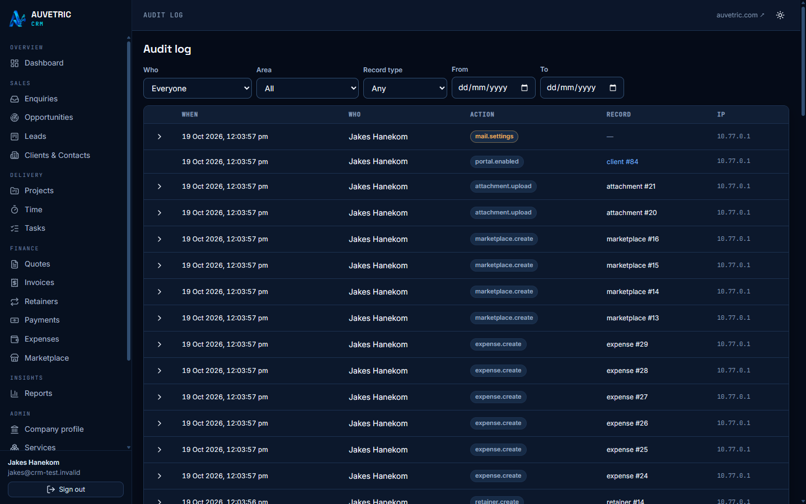
Audit log: every sign-in, failed attempt and financial change, with person, area, record and details.
Filter by person, area, record type and dates. Use it to answer "who changed this invoice?" or "did someone try to sign in as me?".
19. Everyday workflows
A new website enquiry
The email alert arrives. Open Enquiries and read the AI summary and the original message.
Spam? Press Spam. Otherwise, adjust the draft reply and send it (Open in mail).
Press Convert to lead. On the lead, set the value, owner and next follow-up.
From lead to paid project
Lead: Create client, then New quote. Add services and proposal sections, then email the quote and mark it sent. Move the lead to Proposal sent.
The client accepts (in the portal, or you press Accepted). Move the lead to Won and press Start project.
During the work, log time and expenses against the project and tick off checklist items and milestones.
To bill: for a fixed price, Convert to invoice on the quote (or invoice a deposit). For hourly work, use Time → Invoice selected. Add re-billable expenses, check the draft, then email it.
The money arrives: Record payment with the bank reference. The invoice becomes Paid.
Weekly routine (15 minutes)
Dashboard: tasks due, overdue invoices, projects due soon.
Opportunities: shortlist or skip the new listings.
Leads: move cards and set the next follow-up on each open lead.
Time: make sure the week's hours are logged.
Month-end routine
Retainers: check this month's drafts (created automatically), then send them.
Time and expenses: invoice everything unbilled.
Payments: match the bank statement; handle portal notices.
Debtors: chase anything 30+ days and send statements.
Marketplace: record platform payouts.
Reports → Last month: review revenue, cash flow and utilisation; export CSVs for the accountant.
20. Rules worth knowing & troubleshooting
Built-in rules
Totals are always calculated by the system. You enter quantities and rates; the CRM works out lines, discount, VAT and totals.
Paid, cancelled and invoiced documents are locked. To change one, cancel it and duplicate it. Only drafts can be deleted, so the number sequence stays complete for the accountant.
A payment can't exceed the balance, can't be dated in the future, and can't be recorded on a draft or cancelled invoice.
Invoiced time and expenses are read-only. Remove the invoice line first to free them.
Foreign-currency amounts need an exchange rate so every report can be shown in N$.
Quotes accepted in the portal can't be edited, because the client agreed to that version. Duplicate it to send a revised quote.
Troubleshooting
Problem
What to do
Lost or new phone, no codes
The other admin presses Reset 2FA in Users; you link the authenticator again at the next sign-in.
"Account locked"
Wait 15 minutes, or ask the other admin to press Unlock.
Forgot password
The other admin presses New password and gives you the one-time password by phone.
Email won't send
Settings → Email → Send test email. The error shows Zoho's reason. The usual causes are a wrong app password, or SMTP access disabled in the Zoho admin console.
Client didn't get the portal link
Check that the portal is switched on and their address is on the client or a contact. Ask them to check spam and request a new link (three requests per 15 minutes).
No new enquiries or job listings
Check Integrations → last used. The n8n automation runs on Jakes's PC and must be running. Website enquiries still arrive in the CRM directly.
Retainer invoice missing
Check the retainer is active and set to auto, then Settings → Daily job → Run now.
Something was changed unexpectedly
Admin → Audit log, filtered by the record or the date.
Data & privacy
The data is stored in a private Postgres database (Supabase, Ireland) that is closed to the public internet APIs. Files and backups are in Netlify storage.
Website enquiries are sent to Anthropic's Claude for triage, as stated in the website's privacy notice.
For an erasure request, delete the enquiry and the related lead or contact.
Auvetric Data Solutions · Windhoek, Namibia · info@auvetric.com